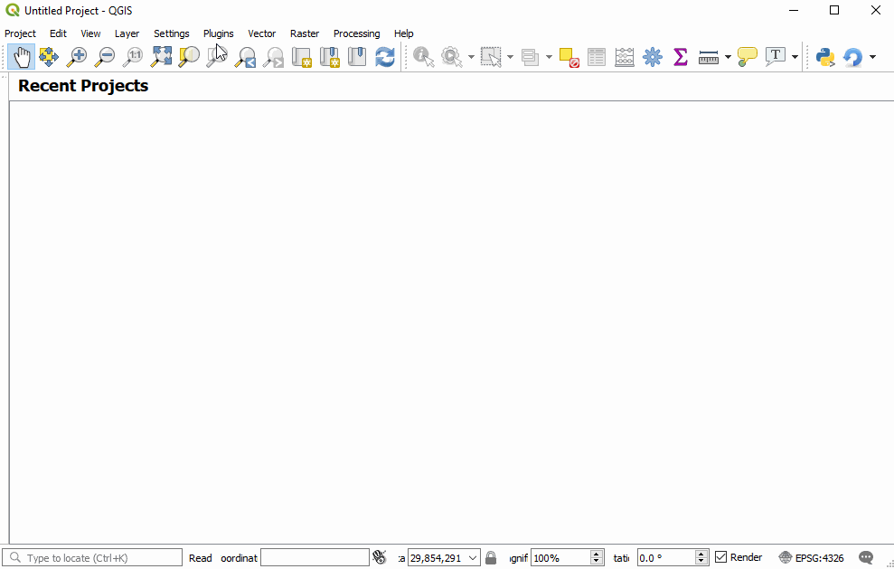

Welcome to GIS4WRF¶
Here you can find installation instructions, documentation and tutorials for the GIS4WRF plug-in (@Meyer and Riechert 2019; @Meyer and Riechert 2018).
GIS4WRF is a free and open source QGIS plug-in to help researchers and practitioners with their Advanced Research Weather Research and Forecasting (@Skamarock et al. 2008) modelling workflows. GIS4WRF can be used to pre-process input data, run simulations and visualize or post-process results on Windows, macOS, and Linux.
Pre-built binaries with WRF-CMake
Did you know that we provide pre-built binaries for Windows, macOS and Linux through WRF-CMake? To know how to download and use them in GIS4WRF see the Documentation section. If you are looking to download the pre-built WPS/WRF programs separately go to https://github.com/WRF-CMake.

Quick start¶
If you are familiar with QGIS and have installed the latest version of QGIS 3 on Windows, you can find and install GIS4WRF from the Plugins > Manage and Install Plugins... menu. On macOS and Linux, or if you are new to QGIS or GIS4WRF, please see the installation page. If you want to know how to download pre-built binaries for WPS and WRF so that you can run simulations on Windows, macOS and Linux, see the Configuration section. To learn how to use GIS4WRF see the Documentation or Tutorials sections.
